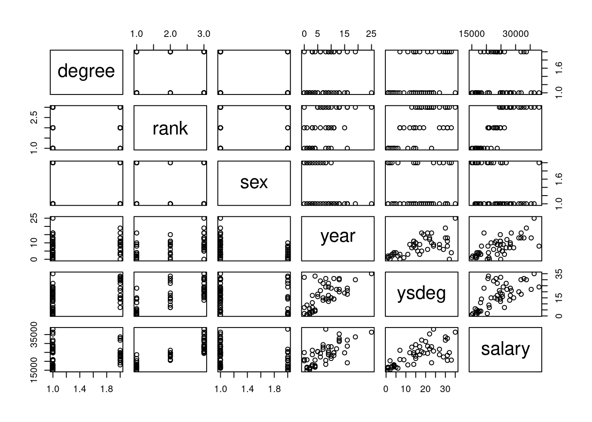

Code
library(tidyverse)
library(dplyr)
library(ggplot2)
library(alr4)
library(smss)
knitr::opts_chunk$set(echo = TRUE)Kalimah Muhammad
November 14, 2022
For recent data in Jacksonville, Florida, on y = selling price of home (in dollars), x1 = size of home (in square feet), and x2 = lot size (in square feet), the prediction equation is ŷ = −10,536 + 53.8x1 + 2.84x2.
A particular home of 1240 square feet on a lot of 18,000 square feet sold for $145,000. Find the predicted selling price and the residual, and interpret.
1
145000
Call:
lm(formula = price ~ sq + lot, data = test)
Residuals:
ALL 1 residuals are 0: no residual degrees of freedom!
Coefficients: (2 not defined because of singularities)
Estimate Std. Error t value Pr(>|t|)
(Intercept) 145000 NaN NaN NaN
sq NA NA NA NA
lot NA NA NA NA
Residual standard error: NaN on 0 degrees of freedomFor fixed lot size, how much is the house selling price predicted to increase for each square-foot increase in home size? Why? The selling price would increase by 2,374.01 for each sqaure foot.
According to this prediction equation, for fixed home size, how much would lot size need to increase to have the same impact as a one-square-foot increase in home size? 2.84.
(Data file: salary in alr4 R package). The data file concerns salary and other characteristics of all faculty in a small Midwestern college collected in the early 1980s for presentation in legal proceedings for which discrimination against women in salary was at issue. All persons in the data hold tenured or tenure track positions; temporary faculty are not included. The variables include degree, a factor with levels PhD and MS; rank, a factor with levels Asst, Assoc, and Prof; sex, a factor with levels Male and Female; Year, years in current rank; ysdeg, years since highest degree, and salary, academic year salary in dollars.
Test the hypothesis that the mean salary for men and women is the same, without regard to any other variable but sex. Explain your findings.
Welch Two Sample t-test
data: salary by sex
t = 1.7744, df = 21.591, p-value = 0.09009
alternative hypothesis: true difference in means between group Male and group Female is not equal to 0
95 percent confidence interval:
-567.8539 7247.1471
sample estimates:
mean in group Male mean in group Female
24696.79 21357.14 Based on the above t.test, the average male salary is higher than the average female salary, 24,696.79 to 21,357.14 respectively.
Run a multiple linear regression with salary as the outcome variable and everything else as predictors, including sex. Assuming no interactions between sex and the other predictors, obtain a 95% confidence interval for the difference in salary between males and females.
Call:
lm(formula = salary ~ degree + rank + sex + year + ysdeg, data = salary)
Coefficients:
(Intercept) degreePhD rankAssoc rankProf sexFemale year
15746.0 1388.6 5292.4 11118.8 1166.4 476.3
ysdeg
-124.6
Call:
lm(formula = salary ~ degree + rank + sex + year + ysdeg, data = salary)
Residuals:
Min 1Q Median 3Q Max
-4045.2 -1094.7 -361.5 813.2 9193.1
Coefficients:
Estimate Std. Error t value Pr(>|t|)
(Intercept) 15746.05 800.18 19.678 < 2e-16 ***
degreePhD 1388.61 1018.75 1.363 0.180
rankAssoc 5292.36 1145.40 4.621 3.22e-05 ***
rankProf 11118.76 1351.77 8.225 1.62e-10 ***
sexFemale 1166.37 925.57 1.260 0.214
year 476.31 94.91 5.018 8.65e-06 ***
ysdeg -124.57 77.49 -1.608 0.115
---
Signif. codes: 0 '***' 0.001 '**' 0.01 '*' 0.05 '.' 0.1 ' ' 1
Residual standard error: 2398 on 45 degrees of freedom
Multiple R-squared: 0.855, Adjusted R-squared: 0.8357
F-statistic: 44.24 on 6 and 45 DF, p-value: < 2.2e-16
Interpret your finding for each predictor variable; discuss (a) statistical significance, (b) interpretation of the coefficient / slope in relation to the outcome variable and other variables.
-MS degree: baseline estimate
-PHD degree: increase in estimate
-Rank Asst.: significantly lowers estimate, statistically significant
-Rank Assoc.: significantly lowers estimate, statistically significant
-Rank Prof.: baseline estimate, statistically significant
-Female: increase in estimate
-Year: statistically significant
-Year since degree: minimally lowers estimate
From the pairs graph, we also see an association between rank, year, years since degree, and salary.
Change the baseline category for the rank variable. Interpret the coefficients related to rank again.
Call:
lm(formula = salary ~ rank, data = salary)
Coefficients:
(Intercept) rankAsst rankAssoc
29659 -11890 -6483
Call:
lm(formula = salary ~ rank, data = salary)
Residuals:
Min 1Q Median 3Q Max
-5209.0 -1819.2 -417.8 1586.6 8386.0
Coefficients:
Estimate Std. Error t value Pr(>|t|)
(Intercept) 29659.0 669.3 44.316 < 2e-16 ***
rankAsst -11890.3 972.4 -12.228 < 2e-16 ***
rankAssoc -6483.0 1043.0 -6.216 1.09e-07 ***
---
Signif. codes: 0 '***' 0.001 '**' 0.01 '*' 0.05 '.' 0.1 ' ' 1
Residual standard error: 2993 on 49 degrees of freedom
Multiple R-squared: 0.7542, Adjusted R-squared: 0.7442
F-statistic: 75.17 on 2 and 49 DF, p-value: 1.174e-15Here, we can see higher salary associated with higher ranking (Professor compared to Assistant and Associate Professor) based on the estimate and coefficient values.
Finkelstein (1980), in a discussion of the use of regression in discrimination cases, wrote, “[a] variable may reflect a position or status bestowed by the employer, in which case if there is discrimination in the award of the position or status, the variable may be ‘tainted.’” Thus, for example, if discrimination is at work in promotion of faculty to higher ranks, using rank to adjust salaries before comparing the sexes may not be acceptable to the courts.
Exclude the variable rank, refit, and summarize how your findings changed, if they did.
Call:
lm(formula = salary ~ degree + sex + year + ysdeg, data = salary)
Coefficients:
(Intercept) degreePhD sexFemale year ysdeg
17183.6 -3299.3 -1286.5 352.0 339.4
Call:
lm(formula = salary ~ degree + sex + year + ysdeg, data = salary)
Residuals:
Min 1Q Median 3Q Max
-8146.9 -2186.9 -491.5 2279.1 11186.6
Coefficients:
Estimate Std. Error t value Pr(>|t|)
(Intercept) 17183.57 1147.94 14.969 < 2e-16 ***
degreePhD -3299.35 1302.52 -2.533 0.014704 *
sexFemale -1286.54 1313.09 -0.980 0.332209
year 351.97 142.48 2.470 0.017185 *
ysdeg 339.40 80.62 4.210 0.000114 ***
---
Signif. codes: 0 '***' 0.001 '**' 0.01 '*' 0.05 '.' 0.1 ' ' 1
Residual standard error: 3744 on 47 degrees of freedom
Multiple R-squared: 0.6312, Adjusted R-squared: 0.5998
F-statistic: 20.11 on 4 and 47 DF, p-value: 1.048e-09Excluding rank, variables for degree, year, and years since degree become more significant.
Everyone in this dataset was hired the year they earned their highest degree. It is also known that a new Dean was appointed 15 years ago, and everyone in the dataset who earned their highest degree 15 years ago or less than that has been hired by the new Dean. Some people have argued that the new Dean has been making offers that are a lot more generous to newly hired faculty than the previous one and that this might explain some of the variation in Salary.
Create a new variable that would allow you to test this hypothesis and run another multiple regression model to test this. Select variables carefully to make sure there is no multicollinearity. Explain why multicollinearity would be a concern in this case and how you avoided it. Do you find support for the hypothesis that the people hired by the new Dean are making higher than those that were not?
Welch Two Sample t-test
data: salary by new_dean
t = -0.55774, df = 39.995, p-value = 0.5801
alternative hypothesis: true difference in means between group FALSE and group TRUE is not equal to 0
95 percent confidence interval:
-4337.222 2461.145
sample estimates:
mean in group FALSE mean in group TRUE
23454.91 24392.95
Call:
lm(formula = salary ~ new_dean, data = salary2)
Residuals:
Min 1Q Median 3Q Max
-9392.9 -5208.2 264.1 3441.8 14590.1
Coefficients:
Estimate Std. Error t value Pr(>|t|)
(Intercept) 23455 1037 22.613 <2e-16 ***
new_deanTRUE 938 1716 0.547 0.587
---
Signif. codes: 0 '***' 0.001 '**' 0.01 '*' 0.05 '.' 0.1 ' ' 1
Residual standard error: 5958 on 50 degrees of freedom
Multiple R-squared: 0.005941, Adjusted R-squared: -0.01394
F-statistic: 0.2988 on 1 and 50 DF, p-value: 0.587Based on the two-sample t-test and regression model, faculty hired by the new dean 15 years ago have a slightly higher salary than those hired prior. This may be attributed to the rank or experience of those hired under the new dean’s tenure so we will perform another model using the interacting term rank and degree.
Call:
lm(formula = salary ~ degree + rank * new_dean, data = salary2)
Residuals:
Min 1Q Median 3Q Max
-5886.9 -1584.4 -499.6 1538.8 8831.1
Coefficients:
Estimate Std. Error t value Pr(>|t|)
(Intercept) 29213.89 867.27 33.685 < 2e-16 ***
degreePhD 1054.74 1020.26 1.034 0.307
rankAsst -11764.52 1208.79 -9.732 1.21e-12 ***
rankAssoc -6958.52 1610.43 -4.321 8.47e-05 ***
new_deanTRUE 518.22 1468.73 0.353 0.726
rankAsst:new_deanTRUE -212.54 2189.70 -0.097 0.923
rankAssoc:new_deanTRUE -33.19 2301.23 -0.014 0.989
---
Signif. codes: 0 '***' 0.001 '**' 0.01 '*' 0.05 '.' 0.1 ' ' 1
Residual standard error: 3075 on 45 degrees of freedom
Multiple R-squared: 0.7617, Adjusted R-squared: 0.7299
F-statistic: 23.97 on 6 and 45 DF, p-value: 1.663e-12Once controlled for the dean status, faculty hired as Assistant and Associate Professors during the prior dean’s tenure were estimated considerably less.
Using the house.selling.price data, run and report regression results modeling y = selling price (in dollars) in terms of size of home (in square feet) and whether the home is new (1 = yes; 0 = no). In particular, for each variable; discuss statistical significance and interpret the meaning of the coefficient.
Call:
lm(formula = Price ~ Size + New, data = house.selling.price)
Residuals:
Min 1Q Median 3Q Max
-205102 -34374 -5778 18929 163866
Coefficients:
Estimate Std. Error t value Pr(>|t|)
(Intercept) -40230.867 14696.140 -2.738 0.00737 **
Size 116.132 8.795 13.204 < 2e-16 ***
New 57736.283 18653.041 3.095 0.00257 **
---
Signif. codes: 0 '***' 0.001 '**' 0.01 '*' 0.05 '.' 0.1 ' ' 1
Residual standard error: 53880 on 97 degrees of freedom
Multiple R-squared: 0.7226, Adjusted R-squared: 0.7169
F-statistic: 126.3 on 2 and 97 DF, p-value: < 2.2e-16Newness appears as the most statistically significant variable in determining price followed by size.
Report and interpret the prediction equation, and form separate equations relating selling price to size for new and for not new homes.
Call:
lm(formula = Price ~ New * Size, data = house.selling.price)
Residuals:
Min 1Q Median 3Q Max
-175748 -28979 -6260 14693 192519
Coefficients:
Estimate Std. Error t value Pr(>|t|)
(Intercept) -22227.808 15521.110 -1.432 0.15536
New -78527.502 51007.642 -1.540 0.12697
Size 104.438 9.424 11.082 < 2e-16 ***
New:Size 61.916 21.686 2.855 0.00527 **
---
Signif. codes: 0 '***' 0.001 '**' 0.01 '*' 0.05 '.' 0.1 ' ' 1
Residual standard error: 52000 on 96 degrees of freedom
Multiple R-squared: 0.7443, Adjusted R-squared: 0.7363
F-statistic: 93.15 on 3 and 96 DF, p-value: < 2.2e-16Older homes are estimated less than newer homes but the size of a newer home is the most statistically significant.
Find the predicted selling price for a home of 3000 square feet that is (i) new, (ii) not new.
Fit another model, this time with an interaction term allowing interaction between size and new, and report the regression results.
Report the lines relating the predicted selling price to the size for homes that are (i) new, (ii) not new.
When the interacting term is added both the price of the older home decreases and the price for the newer home increases. This creates a greater range in variability compared to the first model.
Find the predicted selling price for a home of 3000 square feet that is (i) new, (ii) not new.
1
308163.9 1
365900.2 For an older home, the price for a 3000sq home is predicted at 308,163.90. For a new home, the predicted price would be 365,900.20.
Find the predicted selling price for a home of 1500 square feet that is (i) new, (ii) not new. Comparing to (F), explain how the difference in predicted selling prices changes as the size of home increases.
1
133966.5 1
191702.8 For an older home, the price for a 1500sq home is predicted at 133,966.50. For a new home, the predicted price would be 191,702.80.
As the size of the home doubles, the predicted price of both the older and newer home increased by the same value of 174,197.40.
Do you think the model with interaction or the one without it represents the relationship of size and new to the outcome price? What makes you prefer one model over another? The model that adds whether the home is new rather than multiply by it, is a better model more reflective of the actual rates.
---
title: 'Homework #4'
author: "Kalimah Muhammad"
date: "11/14/2022"
desription: "Homework #4"
format:
html:
toc: true
code-fold: true
code-copy: true
code-tools: true
categories:
- hw4
- Kalimah Muhammad
---
```{r}
#| label: setup
#| warning: false
library(tidyverse)
library(dplyr)
library(ggplot2)
library(alr4)
library(smss)
knitr::opts_chunk$set(echo = TRUE)
```
## Question 1
For recent data in Jacksonville, Florida, on y = selling price of home (in dollars), x1 = size of home (in square feet), and x2 = lot size (in square feet), the prediction equation is
ŷ = −10,536 + 53.8x1 + 2.84x2.
### 1.A
A particular home of 1240 square feet on a lot of 18,000 square feet sold for $145,000. Find the predicted selling price and the residual, and interpret.
```{r}
test <- data.frame(sq=c(1240), lot=c(18000), price=c(145000))
test_fit <- lm(price~sq+lot, data=test)
predict(test_fit)
summary(test_fit)
```
### 1.B
For fixed lot size, how much is the house selling price predicted to increase for each square-foot increase in home size? Why? The selling price would increase by 2,374.01 for each sqaure foot.
### 1.C
According to this prediction equation, for fixed home size, how much would lot size need to increase to have the same impact as a one-square-foot increase in home size? 2.84.
## Question 2
(Data file: salary in alr4 R package). The data file concerns salary and other characteristics of all faculty in a small Midwestern college collected in the early 1980s for presentation in legal proceedings for which discrimination against women in salary was at issue. All persons in the data hold tenured or tenure track positions; temporary faculty are not included. The variables include degree, a factor with levels PhD and MS; rank, a factor with levels Asst, Assoc, and Prof; sex, a factor with levels Male and Female; Year, years in current rank; ysdeg, years since highest degree, and salary, academic year salary in dollars.
```{r}
data(salary) #load salary data
```
### 2.A
Test the hypothesis that the mean salary for men and women is the same, without regard to any other variable but sex. Explain your findings.
```{r}
t.test(salary ~ sex, data=salary)
```
Based on the above t.test, the average male salary is higher than the average female salary, 24,696.79 to 21,357.14 respectively.
### 2.B
Run a multiple linear regression with salary as the outcome variable and everything else as predictors, including sex. Assuming no interactions between sex and the other predictors, obtain a 95% confidence interval for the difference in salary between males and females.
```{r}
salaryfit<-lm(salary ~ degree + rank + sex + year + ysdeg, data=salary)
salaryfit
summary(salaryfit)
pairs(salary)
```
### 2.C
Interpret your finding for each predictor variable; discuss (a) statistical significance, (b) interpretation of the coefficient / slope in relation to the outcome variable and other variables.
-MS degree: baseline estimate
-PHD degree: increase in estimate
-Rank Asst.: significantly lowers estimate, statistically significant
-Rank Assoc.: significantly lowers estimate, statistically significant
-Rank Prof.: baseline estimate, statistically significant
-Female: increase in estimate
-Year: statistically significant
-Year since degree: minimally lowers estimate
From the pairs graph, we also see an association between rank, year, years since degree, and salary.
### 2.D
Change the baseline category for the rank variable. Interpret the coefficients related to rank again.
```{r}
salary$rank <-relevel(salary$rank, ref="Prof")
lm(salary ~ rank, data=salary)
summary(lm(salary ~ rank, data=salary))
```
Here, we can see higher salary associated with higher ranking (Professor compared to Assistant and Associate Professor) based on the estimate and coefficient values.
### 2.E
Finkelstein (1980), in a discussion of the use of regression in discrimination cases, wrote, “[a] variable may reflect a position or status bestowed by the employer, in which case if there is discrimination in the award of the position or status, the variable may be ‘tainted.’ ” Thus, for example, if discrimination is at work in promotion of faculty to higher ranks, using rank to adjust salaries before comparing the sexes may not be acceptable to the courts.
Exclude the variable rank, refit, and summarize how your findings changed, if they did.
```{r}
salaryfit2<-lm(salary ~ degree + sex + year + ysdeg, data=salary)
salaryfit2
summary(salaryfit2)
```
Excluding rank, variables for degree, year, and years since degree become more significant.
### 2.F
Everyone in this dataset was hired the year they earned their highest degree. It is also known that a new Dean was appointed 15 years ago, and everyone in the dataset who earned their highest degree 15 years ago or less than that has been hired by the new Dean. Some people have argued that the new Dean has been making offers that are a lot more generous to newly hired faculty than the previous one and that this might explain some of the variation in Salary.
Create a new variable that would allow you to test this hypothesis and run another multiple regression model to test this. Select variables carefully to make sure there is no multicollinearity. Explain why multicollinearity would be a concern in this case and how you avoided it. Do you find support for the hypothesis that the people hired by the new Dean are making higher than those that were not?
```{r}
salary2 <- salary%>%
mutate(new_dean= year<'16') #create column determining if new dean present
t.test(salary ~ new_dean, data=salary2)
summary(lm(salary ~ new_dean, data=salary2))
```
Based on the two-sample t-test and regression model, faculty hired by the new dean 15 years ago have a slightly higher salary than those hired prior. This may be attributed to the rank or experience of those hired under the new dean's tenure so we will perform another model using the interacting term rank and degree.
```{r}
summary(lm(salary ~ degree + rank *new_dean, data=salary2))
```
Once controlled for the dean status, faculty hired as Assistant and Associate Professors during the prior dean's tenure were estimated considerably less.
### 3.A
Using the house.selling.price data, run and report regression results modeling y = selling price (in dollars) in terms of size of home (in square feet) and whether the home is new (1 = yes; 0 = no). In particular, for each variable; discuss statistical significance and interpret the meaning of the coefficient.
```{r}
data(house.selling.price) #load data
summary(lm(Price ~ Size + New, data=house.selling.price))
```
Newness appears as the most statistically significant variable in determining price followed by size.
### 3.B
Report and interpret the prediction equation, and form separate equations relating selling price to size for new and for not new homes.
```{r}
summary(lm(Price ~ New*Size, data=house.selling.price))
```
Older homes are estimated less than newer homes but the size of a newer home is the most statistically significant.
### 3.C
Find the predicted selling price for a home of 3000 square feet that is (i) new, (ii) not new.
```{r}
old <- data.frame(Size=c(3000), New = 0)
predict((lm(Price~Size+New, data=house.selling.price)), old)
new <- data.frame(Size=c(3000), New = 1)
predict((lm(Price~Size+New, data=house.selling.price)), new)
```
### 3.D
Fit another model, this time with an interaction term allowing interaction between size and new, and report the regression results.
```{r}
old <- data.frame(Size=c(3000), New = 0)
predict((lm(Price~Size*New, data=house.selling.price)), old)
new <- data.frame(Size=c(3000), New = 1)
predict((lm(Price~Size*New, data=house.selling.price)), new)
```
### 3.E
Report the lines relating the predicted selling price to the size for homes that are (i) new, (ii) not new.
When the interacting term is added both the price of the older home decreases and the price for the newer home increases. This creates a greater range in variability compared to the first model.
### 3.F
Find the predicted selling price for a home of 3000 square feet that is (i) new, (ii) not new.
```{r}
old <- data.frame(Size=c(3000), New = 0)
predict((lm(Price~Size+New, data=house.selling.price)), old)
new <- data.frame(Size=c(3000), New = 1)
predict((lm(Price~Size+New, data=house.selling.price)), new)
```
For an older home, the price for a 3000sq home is predicted at 308,163.90. For a new home, the predicted price would be 365,900.20.
### 3.G
Find the predicted selling price for a home of 1500 square feet that is (i) new, (ii) not new. Comparing to (F), explain how the difference in predicted selling prices changes as the size of home increases.
```{r}
old2 <- data.frame(Size=c(1500), New = 0)
predict((lm(Price~ Size + New, data=house.selling.price)), old2)
new2 <- data.frame(Size=c(1500), New = 1)
predict((lm(Price~ Size + New, data=house.selling.price)), new2)
```
For an older home, the price for a 1500sq home is predicted at 133,966.50. For a new home, the predicted price would be 191,702.80.
As the size of the home doubles, the predicted price of both the older and newer home increased by the same value of 174,197.40.
### 3.H
Do you think the model with interaction or the one without it represents the relationship of size and new to the outcome price? What makes you prefer one model over another?
The model that adds whether the home is new rather than multiply by it, is a better model more reflective of the actual rates.